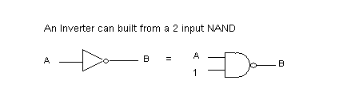
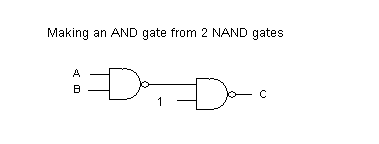
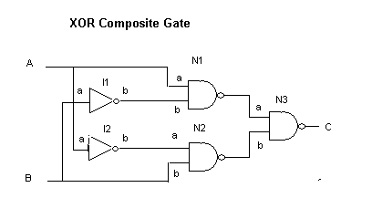

Introduction
In this section we will explore using Erlangs concurrency capabilities to simulate logic gates and circuits. I'm going to assume some familiarity with the Logic Circuits project, one of the first projects on this site.
In the earlier project basic logic gates are built as Python objects. Each basic gate has one or more inputs and a single output. As input values change (0 or 1) the output value is recalculated. In addition, the output of any gate is connected to a set of inputs and sends any change to them. A network of simple gates is built into circuits that add and even perform multiplication. The stuff of computers simulated on a computer.
In this project, we'll take a similar route, but with a few twists. Instead of Python objects as basic gates, we'll spawn independent Erlang processes. These processes communicate with one another only through message passing which is exactly what we need for connecting them together.
The basic NAND gate
We actually need only to build a single basic gate, the 2 input NAND gate. All other gates can be built as circuits starting with it alone. The output of NAND is 0 if and only if both inputs are 1. It is a mirror of an AND gate. The NAND gate followed by an INVERTER becomes an AND gate. An INVERTER can, in turn be made from a single NAND by either connecting the 2 inputs together (treating them as one) or leaving one input always set to 1.

Concurrency in Erlang
Erlang has a simple and elegant of spawning processes and of message passing. We won't explore it in full, just enough for our purposes here.
Since processes communicate only through message passing, the top level structure of a process always looks the same. It resembles a server program in a client/server system. That is, it runs in a loop waiting for a message and responding to it.
Let's look at a simple example. A ticket dispenser gives tickets with ascending numbers each time it is used. Here's a little Erlang model in the file ticket.erl.
ticket(N) ->
receive
_ ->
io:format("Next ticket is ~p~n", [N]),
ticket(N+1)
end.
The variable N holds the next ticket number. A message is received in the receive/end block. The pattern "_" will match any message. The next ticket number is printed and the process repeated through tail recursion. We can launch a ticekt dispenser with the following.
1> c(ticket).
{ok,ticket}
2> T1 = spawn(fun() -> ticket:ticket(100) end).
The "spawn" function takes a function of no arguments as its argument, creates a new process and starts the function passed running within that process. Typically, this function is created on the fly using a fun/end block which is bascially the equivalent of the Python lambda expression. Here, the function in turn calls our "ticket" function passing in its initial ticket number.
It is very convenient to have a helper function to do this spawn for us. For example.
makeTicket(N) -> spawn(fun() -> ticket(N) end).
Now we can do the following.
makeTicket(N) -> spawn(fun() -> ticket(N) end).
Now let's watch the following.
Eshell V5.6.3 (abort with ^G) 1> T1 = spawn(fun() -> ticket:ticket(100) end). <0.33.0> 2> T2 = ticket:makeTicket(200). <0.35.0> 3> T1 ! 0. Next ticket is 100 0 4> T1 ! 0. Next ticket is 101 0 5> T2 ! 0. Next ticket is 200 0 6> T2 ! 0. Next ticket is 201 0 7> T1 ! 0. Next ticket is 102 0 8>
Here we've spawned two ticket dispensers, the first directly and the second using the convenience function "makeTicket". T1 and T2 are set to the "pid" (process id) of each processes. The "!" operator is used to send a message to pid. We're just sending the number zero, but as mentioned above it could be anything since we're matching with "_". As we send messages to these processes they print the next ticket number and then increment. The value returned from the spawn is simply the message sent.
NAND gate as an Erlang process
Let's look at the basic function for the emulation of out NAND gate.
nandG(Tag,A,B,Prev,Con) ->
C = 1-(A band B),
if not (Prev==C) ->
propogate(Tag, Prev, C, Con), nandG(Tag,A,B,C,Con);
true ->
receive
{a,V} -> nandG(Tag,V,B,C,Con);
{b,V} -> nandG(Tag,A,V,C,Con);
{connect, X} ->
propogate(Tag,Prev,C,X),
nandG(Tag,A,B,C,X)
end
end.
The NAND gate has 2 inputs (A and B) and an output C. The function is passed a Tag for identification and the initial values of A and B. We'll get to the parameters Prev and Con in a moment.
Let's first look at the "receive" portion of the function. A message of the form {a,V} or {b,V} is used to set the input, either A or B to the value of V (0 or 1). Getting such a message results in a tail recursive call, resetting the state of gate. As the function is reentered, the output C is computed. If it is different from the previous output, the new value is propogated by messages to inputs of other gates that are connected to this output. Then the function is reentered once more to basically reset the variable "Prev" and enter the receive loop to wait for more messages.
Connections to other inputs is formatted as a list of tuples. Each tuple consists of a gate identifier, basically its Pid, and a symbol for the input itself. Let's look at the propogate function.
propogate(Who, Prev, Val, Con) ->
io:format("~p was ~p xmits ~p to ~p~n", [Who, Prev, Val, Con]),
prop2 (Con, Val).
prop2([],Val) -> Val;
prop2([{Gate,Input}|T],Val) -> Gate ! {Input, Val}, prop2(T,Val).
The "propogate" function outputs a console message showing which gate is outputting, what value, to what inputs. The function "prop2" does the real work, extracting the Gate and Input from each tuple, and then sending a message to the receiver gates input with the new value (0 or 1). Notice the variable "Prev" is printed just for information purposes.
Finally, the "nandG" function with a single "Tag" parameter (nandG/1) is the one actually used from the outside. It spawns the nandG/5 function as a new process setting the inputs initially to "1", their natural state when unconnected, and then returns the pid of the new process.
nandG(Tag) -> spawn(fun() -> nandG(Tag,1,1,99,[]) end).
Making a composite gate
A composite gate combines basic gates at one level, connects them together and then provides inputs and an output from the entire structure. Let's make an AND gate using two NAND gates as shown here.
Again we'll break the system into 2 parts. The first (andG/1) will assemble the parts, wire them together a new process for the composite gate.
andG(Tag) ->
G1 = logic:nandG(g1),
G2 = logic:nandG(g2),
G1 ! {connect, [{G2,a}]}, % internal connection
spawn(fun() -> andG(Tag,G1,G2) end).
As you can see, the inner gates (actually, their process ids) are held in the variables G1 and G2. Then the internal connection is made from the output of G1 to input A of G2. This connection is not visible to the outside. Finally, we spawn yet another process to handle the composite gate itself. This process receives message to set its inputs and make connections to its output in exactly the same way a basic gate does.
andG(Tag, G1, G2) ->
receive
{a,V} -> G1 ! {a,V}, andG(Tag,G1,G2);
{b,V} -> G1 ! {b,V}, andG(Tag,G1,G2);
{connect, X} -> G2 ! {connect, X}, andG(Tag,G1,G2)
end.
Let's play with this a bit
Eshell V5.6.3 (abort with ^G)
1> And = logic:andG("A1").
g2 was 99 xmits 0 to []
g1 was 99 xmits 0 to []
<0.35.0>
g1 was 0 xmits 0 to [{<0.34.0>,a}]
g2 was 0 xmits 1 to []
2> And ! {a,0}.
g1 was 0 xmits 1 to [{<0.34.0>,a}]
{a,0}
g2 was 1 xmits 0 to []
3> And ! {a,1}.
g1 was 1 xmits 0 to [{<0.34.0>,a}]
{a,1}
g2 was 0 xmits 1 to []
4>
In line one we create a composite AND gate giving it the name "A1". Since the io.format call is still in the propogate function we can see the 2 internal gates trying to transmit an output to empty recipricant lists. The pid of our AND gate (0.35.0) is printed as its process is spawned. Then we see more propogation and the interior gates are connected.
On line two we set input A of our composite AND to 0, which brings the composite output to zero as well. In line three we set it back to one.
A monitor process
The output spewed to our screen from the propogate function is really more verbose than we want, at least once we trust the basic logic of our gates. Let's comment out that particular statement leaving us with
propogate(Who, Prev, Val, Con) ->
% io:format("~p was ~p xmits ~p to ~p~n", [Who, Prev, Val, Con]),
prop2 (Con, Val).
prop2([],Val) -> Val;
prop2([{Gate,Input}|T],Val) -> Gate ! {Input, Val}, prop2(T,Val).
and in its place have a function "monitor" that accepts a single input. This will be connected to an output that we wish to monitor. We could have several monitors in a circuit. By providing a tag for each we can keep track of who's talking. Here's the code
monitor(Tag) -> spawn(fun() -> monitor(Tag,0) end).
monitor(Tag,_) ->
receive
{a,V} -> io:format("Monitor ~p reads ~p~n", [Tag,V]), monitor(Tag,V)
end.
Now let's play with this a bit. I have deleted the values echoed from the message passing commands.
3> M1 = logic:monitor(m1).
4> M1 ! {a,1}.
Monitor m1 reads 1
5> M1 ! {a,1}.
Monitor m1 reads 1
6> M1 ! {a,0}.
Monitor m1 reads 0
We created a monitor "m1" whose pid is in M1 (line 3). Then we set its input to one resulting in a readout. Setting it back to zero gives another readout. Now let's connect the monitor to the output of a composite gate.
6> A1 = logic:andG(a1).
7> A1 ! {connect, [{M1,a}]}.
Monitor m1 reads 1
8> A1 ! {a,0}.
Monitor m1 reads 0
9> A1 ! {a,1}.
Monitor m1 reads 1
A more complex example
The following is composite gate for an exclusive OR (XOR) gate. This gate outputs 1 if either input is 1 but not both. Or to put it another way, it outputs 1 if the inputs are different. It is the basis of the half-adder circuit.
See if you can walk through the logic on your own.
Without too much surprise, here is the erlang code for the XOR gate. Though more elaborate than the AND gate, the ideas are still the same.
xorG(Tag) ->
I1 = logic:nandG(i1), % two inverters (just use one input of nand)
I2 = logic:nandG(i2),
N1 = logic:nandG(n1), % three 2 input nand gates
N2 = logic:nandG(n2),
N3 = logic:nandG(n3),
I1 ! {connect, [{N1,b}]}, % internal connections
I2 ! {connect, [{N2,a}]},
N1 ! {connect, [{N3,a}]},
N2 ! {connect, [{N3,b}]},
spawn(fun() -> xorG(Tag,N1,N2,N3,I1,I2) end).
xorG(Tag,N1,N2,N3,I1,I2) ->
receive
{a,V} -> N1 ! {a,V}, I2 ! {a,V}, xorG(Tag,N1,N2,N3,I1,I2);
{b,V} -> N2 ! {b,V}, I1 ! {a,V}, xorG(Tag,N1,N2,N3,I1,I2);
{connect, X} -> N3 ! {connect, X} , xorG(Tag,N1,N2,N3,I1,I2)
end.
If you didn't walk through the logic of the XOR gate on your own, here's my rendition. N3 outputs 1 if either of its inputs is zero. N1 outputs zero if A is 1 and B is 0. N2 outputs zero if B is 1 and A is 0.
And here is an interaction with an Xor gate and a monitor on its output. Again extra echoing of values by the erlang shell have been removed.
11> X1 = logic:xorG(x1).
12> M2 = logic:monitor(x1_monitor).
13> X1 ! {connect, [{M2,a}]}.
Monitor x1_monitor reads 0
14> X1 ! {b,0}.
Monitor x1_monitor reads 1
15> X1 ! {a,0}.
Monitor x1_monitor reads 0
Of course we could extend all this to emulate adders, registers, and other circuits built in the earlier Python project. It would quickly swell to hunderds of Erlang processes giving the system quite a nice workout.
It would also be interesting to extend these ideas into the realm of analog electronics building units for resisters, capacitors, coils, diodes and transistors. Well, maybe something for another rainy day in Oregon. :)
Links to the Erlang code
Finally, here are links to ticket.erl and logic.erl code.